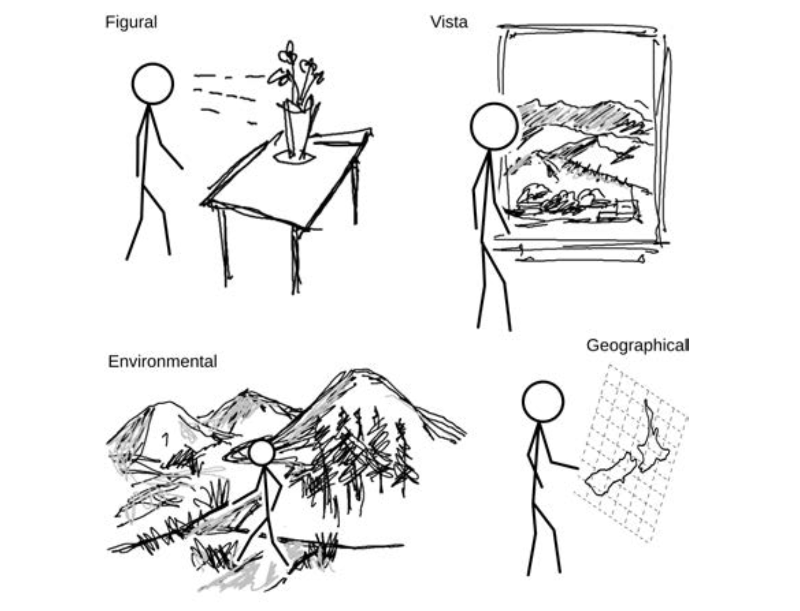
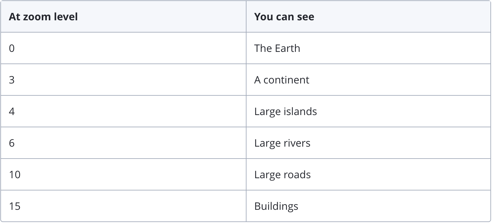
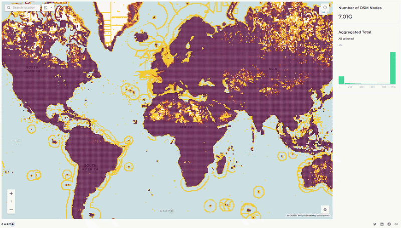

Scale in GIScience and Cartography
Situating Scale in GIScience
Prominent conceptualizations of spatial scale in geography emphasize size, hierarchy, and social construction. There perspectives can be found in the GIScience literature, but the most prominent persepectives in this field emphasize additionl features. In GIScience, scale is often treated more as a relationship between the world and its representation. As O’Sullivan emphasized, scale mediates how all geographic phenomena are perceived, represented, and ultimately analyzed.
A useful starting point for thinking about scale in GIScience comes from the work of Montello (2004), who highlights an important tension. In traditional cartography, once the scale of a map is fixed, many analytical properties appear to be scale-independent: a clustered pattern, for example, remains clustered regardless of how we interpret it. This apparent stability is part of what gives maps their power as analytical tools. However, Montello argues that this assumption does not hold when we consider human perception and cognition. While spatial relationships may be treated as formally scale-independent in geometric or computational terms, they are not experienced that way by people. The way we perceive, interpret, and reason about space depends fundamentally on scale.
To capture this, Montello builds on earlier work in environmental psychology and proposes a qualitative framework of psychological spaces, organized by how humans experience those spaces. These include:
- Figural space: spaces that can be comprehended in a single view (e.g., a map, a diagram, or even a coffee cup)
- Vista space: spaces that can still be seen from a single viewpoint but are larger than the body (e.g., a room or a plaza)
- Environmental space: spaces that must be understood through movement (e.g., navigating a neighborhood or city)
- Geographical space: spaces so large that they can only be comprehended through representation, such as maps (e.g., regions, countries, or the globe)

Figure 1: Montello’s (1993) qualitative classification of spatial scales.
This framework highlights that scale is not only about the size of space, but about how space is experienced and comes to be understood. In particular, it reveals a deep connection between maps and geographical space because maps allow us to grasp spaces that cannot be directly experienced.
Montello further emphasizes that these differences matter for GIScience in at least three important ways. First, they shape effective spatial communication, influencing how maps and interfaces should be designed for different scales. Second, they raise questions about the validity of simulations, since models developed at one scale may not translate directly to another. Third, they affect spatial decision-making, as choices involving distance, time, and effort are inherently scale-dependent.
Despite these insights, such qualitative frameworks remain relatively rare in GIScience. More commonly, scale is treated in technical terms, mostly as the relationship between geographic reality and its representation in data, maps, or models. In Montello’s terms, this is the relationship between geographical space (the world) and figural space (its representation).
From Map Scale to Digital Scale
We’ve talked about web maps in previous lessons and also about scale as an element of map inference and how it is exemplified in web maps. On traditional paper maps, the relationship between the world and its representation is made explicit through a representative fraction: a ratio that tells us how a distance on the map corresponds to distance in the real world (e.g., 1:24,000). The representational fraction provides a fixed and stable reference for interpreting spatial relationships.
However, it is now often the case that cartographers no longer have much control over the final physical form in which maps are presented to users. Screen size and resolution vary widely depending on the user’s device. While a scale bar can dynamically adjust and remain accurate, a representative fraction becomes unstable and is often not reliably knowable at the moment a map is served to a user’s screen. To address this, modern web mapping systems rely on a different approach to scale based on zoom levels and tile hierarchies. What we might call the “classic” web map is built on a nested structure of scales. At the lowest zoom level (Level 0), a single tile represents the entire world. This tile is then repeatedly subdivided into quarters, with each subdivision increasing the zoom level and level of detail.

Figure 2: Zoom levels and the corresponding information presented in a typical web map. Source: Mapbox
As an example, Mapbox provides maps in 23 zoom levels, with 0 being the lowest zoom level (fully zoomed out) and 22 being the highest (fully zoomed in). Map tiles are stored in a quadtree1 data structure. At zoom level 0, you can see a map of the whole Earth, and this image is contained in a single tile. At zoom level 1, the single tile you saw at zoom level 0 splits into exactly four tiles so the whole world fits in a 2x2 tile square. Below is a demonstration of how this works in practice. You can select different zoom levels to see how the map changes as you zoom in and out.
If you are interested in how this works, here is the code snippet that initializes the map and sets the zoom level. At the initialization, the user needs to set a zoom level, a mapbox tile style, and a mapbox API key to load the map tiles.
const map = L.map(el, {scrollWheelZoom: true}).setView([44.26053976443341, -72.583011566153], 14);
const mapboxStyle = 'mapbox/light-v11';
const mapboxKey = 'ADD YOUR API KEY HERE';
const baseTileLayer = L.tileLayer(
`https://api.mapbox.com/styles/v1/${mapboxStyle}/tiles/{z}/{x}/{y}{r}?access_token=${mapboxKey}`,
{
maxZoom: 18,
attribution: '© <a href="https://www.mapbox.com/" target="_blank">Mapbox</a> © <a href="https://www.openstreetmap.org/copyright" target="_blank">OpenStreetMap</a>',
tileSize: 512,
zoomOffset: -1,
},
);
baseTileLayer.addTo(map);
At any given zoom level, the map displayed on screen is composed of multiple tiles stitched together to create the appearance of a continuous map. This approach allows web maps to load efficiently, retrieving only the tiles needed for the current view rather than rendering the entire map at once. These characteristics are what enables smooth interaction in platforms like Mapbox and Carto.
{kind=link}
Figure 3: Options of Mapbox tiles. More details can be found in the Mapbox documentation.
Early implementations of this system relied on pre-rendered raster tiles: static image files prepared in advance for each zoom level. More recently, the appraoch has shifted toward vector tiling, where tiles act as a hierarchical reference framework (similar to a quadtree). Instead of storing images, vector tiles store geographic features such as roads and buildings, which are dynamically rendered on the client side according to style rules. This allows for greater flexibility, efficiency, and interactivity in modern web mapping.

Figure 4: This example from Carto is creating pre-generated tiles. You can see an example of this with 7.2 billion points using the same process as described in this post. Creating these tiles is very cost effective if you are already paying for a data warehouse; you are using the resources you already have in place. More information here
Resolution and Generalization
Beyond discussing the concepts and technical implementations of scale in GIScience and cartography, another useful way to think about this is through the relationship between grain and extent, which is the size of the smallest observable unit relative to the overall area of study. This relationship highlights a fundamental tension: as we attempt to study larger areas (greater extent), we often lose the ability to represent fine detail (grain), and vice versa.
In GIScience, this tension is operationalized through two closely related concepts: resolution and generalization. Resolution refers to the smallest unit that can be observed or recorded, for example, the pixel size in raster data. Generalization refers to the deliberate simplification of geographic data for representation at different scales. As emphasized in Goodchild (2004), the forms of generalization that are appropriate depend on the nature of the phenomenon being represented. As a result, generalization involves a range of operations, such as selection, simplification, aggregation, and exaggeration.
These processes of generalization have direct implications for analysis and inference. At the most basic level, the resolution of data constrains what can be observed. Features smaller than the resolution may be entirely undetectable and even features only slightly larger may not be reliably distinguished. Features up to twice the resolution may not be reliably detected, and only larger multipixel features can be easily distinguished one from another. Raster data can be conveniently resampled by aggregation to lower resolutions, coarsening the data, by averaging pixel values in the original high-resolution layer to pixel values in the new lower-resolution layer. However, the reverse process of disaggregation by interpolation or smoothing cannot recover the original data.
A similar issue arises with aggregated data. For example, census polygons at the “block” level will record relatively coarse information about the associated population, such as counts of persons in broad 15-year age ranges. While this might be stipulated by privacy constraints, a thought experiment suffices to show that something more fundamental is going on. Given a group of 100 people, if age group counts by year were reported, there would be high variability among broadly similar census blocks. Some blocks would have zero populations reported at some ages, based solely on the census date and on the birth dates of respondents. National censuses of population happen at long time intervals of 5 or 10 years, and so, even though data will have been collected giving exact ages, reporting it to this precision is only likely to make sense at coarser spatial resolutions, for areas with populations of 5000 or more.
{kind=link}
{kind=link}
Figure 5: This becomes especially apparent in small towns such as Plainfield, Vermont, where the entire town is represented as a single census block group. At this scale, the total population is relatively small, and the demographic structure can appear highly irregular. As shown in the census table, certain age groups may have very low counts or even be entirely absent—not necessarily because the underlying population is fundamentally different, but because of the small number of individuals and the timing of data collection. At the same time, aggregating the entire town into a single unit obscures any variation within it, treating the population as homogeneous even though meaningful differences may exist between areas such as the village center and surrounding rural regions.
From a cartographic perspective, generalization further reinforces this point. Maps are no intended to be mirrors of the world, but to represent certain aspects of the world in particular ways for particular purposes. Including everything in small-scale maps is impossible; in fact, even including everything in a notional 1:1 scale map is impossible. In small-scale maps, the first line of defense is selecting what to include or exclude, although this only partly addresses the challenge of simplifying the map sufficiently for it to be useful. In addition, the cartographic “twins” of things in the world are generalized so that they remain legible at small scales, or elements are removed completely to avoid clutter and confusion.
Generalization is usually considered to consist of combining a variety of operations. The routine application of any one of these operations might be relatively straightforward (although often it is not), but combining several operations across multiple datasets to produce an overall effect in a map is extremely complex. For example, it is not a simple matter to generalize a road layer for a particular scale of presentation on a page or screen. It becomes significantly more complicated when the generalization of roads has implications for how building, parcel, or other layers that interact with the road layer should be represented.
Thus, in the same way that the resolution of geospatial data is a complex interaction of spatial, temporal, and measurement scales (especially classification), generalization reveals the subtleties of how scale impacts GIScience in practice.
Two further scale-dependent problems are worth mentioning at this point. One well-known example is the ecological fallacy, which refers to the error of making inferences about individuals based on aggregated data. When data are generalized to coarser spatial units, important variation within those units is lost, and relationships observed at the aggregate level may not hold at finer scales2. Closely related is the modifiable areal unit problem (MAUP), extensively discussed by Openshaw (1978), which highlights how analytical results can change depending on how spatial units are defined and aggregated. We will work through an example of this in the next section of this lesson.
Reference:
O’Sullivan, D. (2024). Scale and Projection. In Computing geographically: Bridging GIScience and geography (pp. 45–74). Guilford Publications.
O’Sullivan, D. (2024). Lines and Areas. In Computing geographically: Bridging GIScience and geography (pp. 131–138). Guilford Publications.
Montello, D. R. (1993). Scale and multiple psychologies of space. In A. U. Frank & I. Campari (Eds.), Spatial Information Theory: A Theoretical Basis for GIS (pp. 312–321). Springer-Verlag.